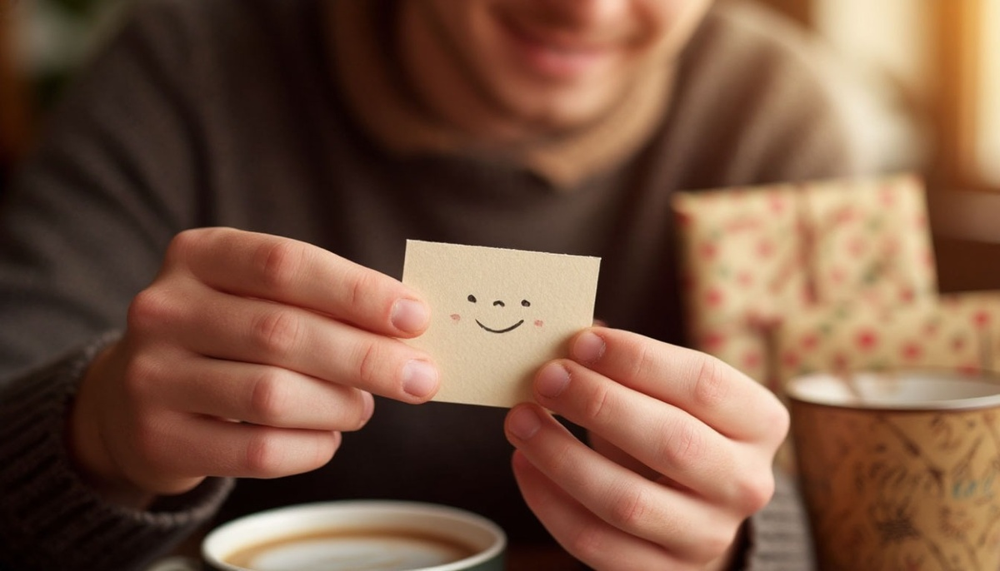

Вы когда-нибудь задумывались, почему мы вообще дарим подарки? Казалось бы, ответ простой: потому что праздник, потому что хочется порадовать, потому что так принято. Но если копнуть глубже, за этим простым действием скрываются очень сложные механизмы — от древних инстинктов до современных психологических защит.
Разберёмся, что на самом деле стоит за желанием дарить, почему иногда это приносит больше радости, чем получать, и откуда берётся чувство вины, если подарок не куплен.
Иллюзия бескорыстия
Нам нравится думать, что мы дарим подарки бескорыстно. Просто потому что любим человека. Но психологи давно выяснили: у любого подарка есть скрытая мотивация. И это нормально — так устроен человек.
Самая древняя мотивация — укрепление связи. Ещё в древности обмен дарами был способом сказать: «Я тебе доверяю, я хочу быть с тобой в одной стае». Подарок был гарантом мира. Сегодня мы не дарим шкуры мамонтов, но механизм остался тем же. Даря что-то коллеге или другу, мы неосознанно выстраиваем социальные связи.
Вторая мотивация — желание быть увиденным. Даря подарок, мы часто хотим показать себя: свой вкус, свою щедрость, свою заботу. «Посмотри, какой я внимательный, я запомнил, что ты любишь». Это способ заявить о себе через вещь.
Третья — контроль. Звучит неудобно, но это правда. Подарок создаёт невидимый долг. Получатель чувствует себя обязанным, а даритель получает негласную власть. Психологи называют это «реципрокностью» — взаимным обменом. Поэтому иногда подарки бывают такими навязчивыми: человек пытается купить ваше внимание.
Почему дарить приятнее, чем получать
В психологии есть термин «тёплое свечение» (warm glow). Это состояние, которое человек испытывает, когда делает что-то хорошее для других. Исследования показывают, что когда мы тратим деньги на других людей, уровень нашего счастья растёт сильнее, чем когда мы тратим их на себя.
Что это значит? Когда вы выбираете подарок, ваш мозг вырабатывает дофамин — гормон предвкушения. Вы представляете, как человек обрадуется, и уже от этого получаете удовольствие. Получатель испытывает радость, но даритель — радость и чувство собственной значимости.
Именно поэтому люди, которые дарят много, часто чувствуют себя счастливее. Они получают «двойную дозу» положительных эмоций.

Подарок как способ справиться с виной
Есть ещё одна причина, о которой не принято говорить. Иногда мы дарим подарки не потому, что хотим, а потому что чувствуем вину.
Вы редко звоните родителям? Вы забыли про годовщину? Вы не пришли на встречу с другом? Подарок становится способом загладить вину. «Я был плохим сыном в этом году, но вот тебе дорогая вещь, чтобы ты не обижался».
Психологи предупреждают: «компенсаторные» подарки работают плохо. Они не решают проблему, а только маскируют её. Человек принимает вещь, но чувство вины у дарителя остаётся. И через месяц всё повторяется.
Что делать? Дарить не вместо общения, а вместе с ним. Если нет времени приехать — не отправляйте дорогой подарок курьером. Лучше позвоните и скажите важные слова. Или приезжайте с простой вещью, но с настоящим вниманием.
Что происходит, когда подарок «не тот»
Психология подарка работает в обе стороны. И когда мы получаем что-то не то, это тоже вызывает сложные чувства.
Первое — разочарование. Мы ждали одну вещь, а получили другую. И хотя нам стыдно это признавать, разочарование есть. Особенно если подарок дорогой — тогда к нему добавляется чувство вины за то, что мы недостаточно рады.
Второе — чувство долга. Дорогой подарок создаёт невидимое обязательство. «Он потратил на меня столько денег, теперь я должна...» Что именно «должна» — обычно непонятно, но напряжение остаётся.
Третье — вопрос к отношениям. Если подарок не попал в ваши интересы, мозг задаёт вопрос: «А он меня вообще знает?». И это уже не про вещь, а про то, насколько близки ваши отношения.
Психологи советуют: не пытайтесь угадать. Если не знаете, что подарить — спросите. Честное «я хочу сделать тебе приятно, что бы ты хотел?» работает лучше, чем дорогая игрушка, купленная наугад.
Как дарить, чтобы это приносило радость
Психология дарит нам простые правила, которые помогают сделать подарок не обузой, а радостью.
Правило 1. Думайте о человеке, а не о вещи. Выбирая подарок, задавайте вопрос: «Это для него или это для моего успокоения?»
Правило 2. Не покупайте подарки «на автомате». Если вы дарите из чувства долга — лучше не дарите вообще. Приезд в гости без подарка, но с вниманием, ценится выше, чем коробка, купленная в последний момент в супермаркете.
Правило 3. Спрашивайте. «Что тебе подарить?» — это не стыдно. Это честно. И часто человек сам подсказывает то, что действительно хочет.
Правило 4. Добавляйте слова. Подарок без объяснения — это просто вещь. Подарок с фразой «я выбрал это, потому что...» — это послание. И оно запоминается гораздо дольше.
Вместо итога
Моя бабушка всегда говорила: «Неважно, что ты подаришь. Важно, как ты это сделаешь». Я тогда думала, что она просто успокаивает меня, когда я стеснялась, что дарю что-то недорогое.
Теперь я понимаю, насколько она была права. Самая дорогая вещь, подаренная без души, забудется через неделю. А простая открытка, написанная от руки, может храниться десятилетиями.
Мы дарим подарки, потому что хотим быть ближе. Потому что хотим, чтобы нас помнили. Потому что хотим сказать то, для чего не всегда есть слова. И если вы помните об этом, выбирая подарок, — вы уже всё делаете правильно.
А что вы чувствуете, когда дарите подарки? Радость, азарт, а может быть, тревогу? Поделитесь в комментариях — мне правда интересно.